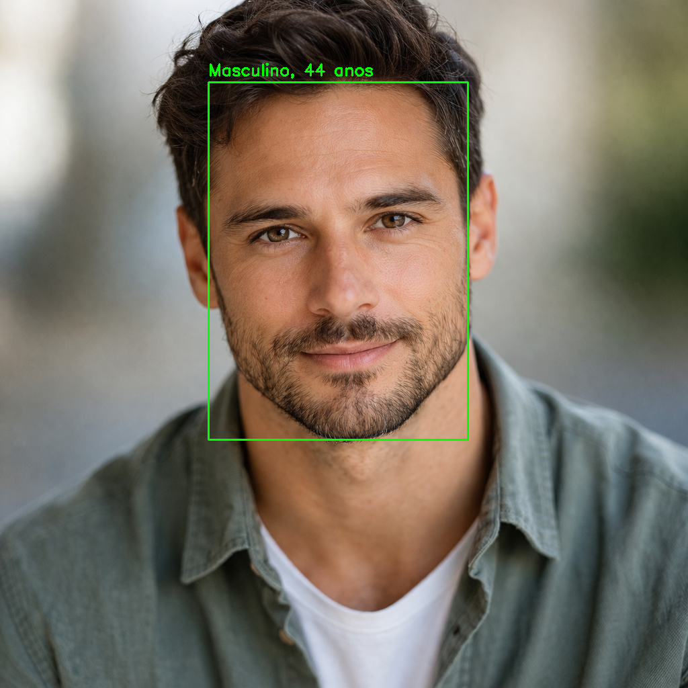
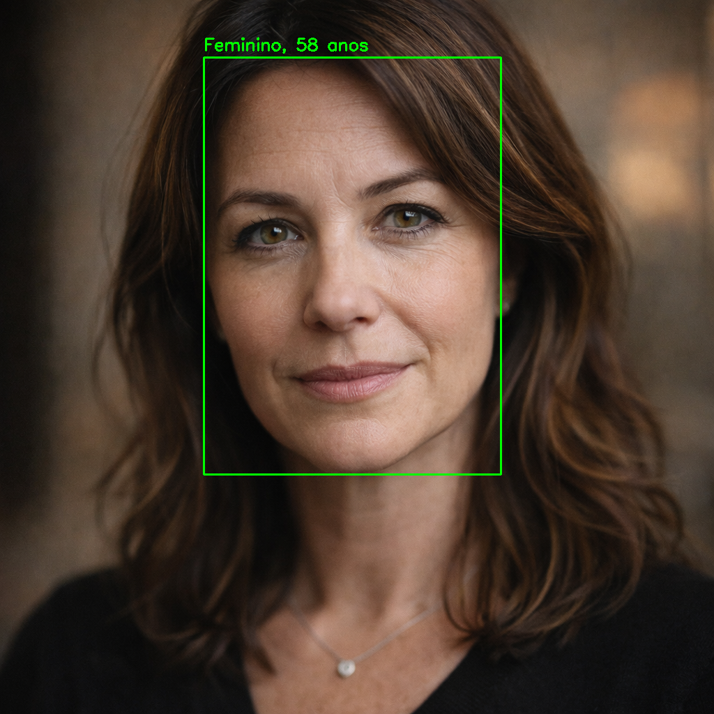
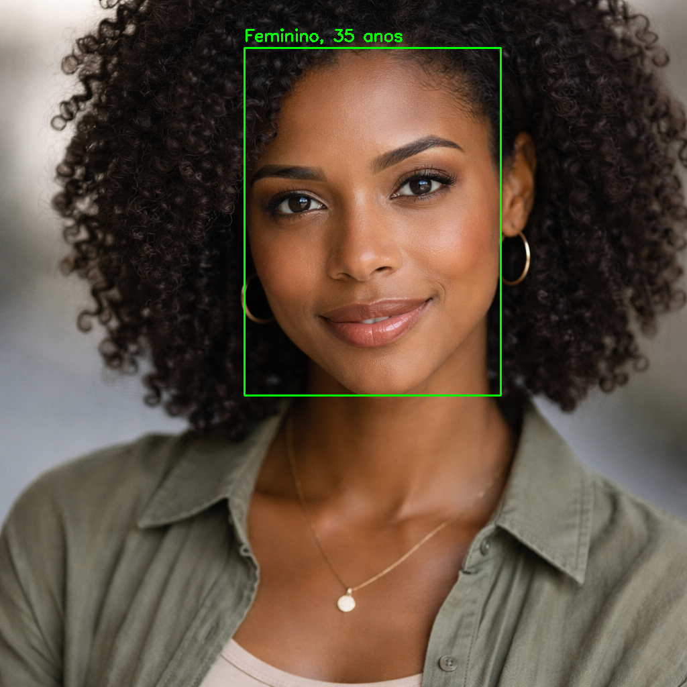
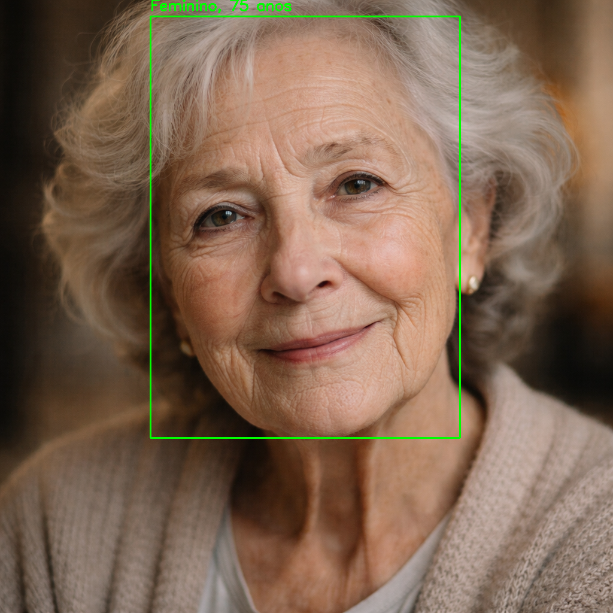
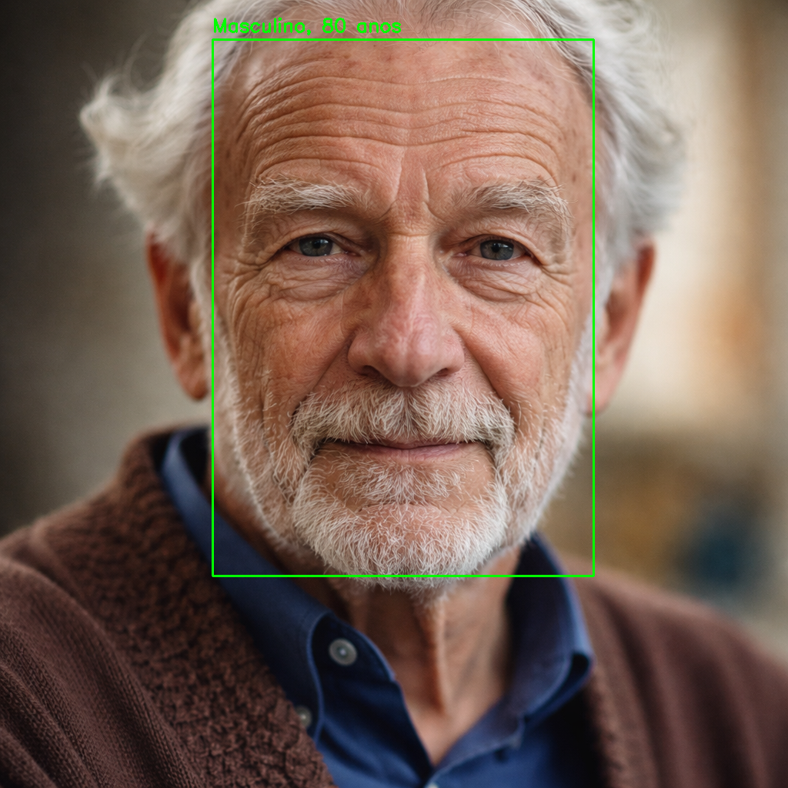

📌 Sobre o Projeto
Este projeto explora técnicas de visão computacional para estimativa de idade e gênero a partir de imagens. Inicialmente utilizando modelos clássicos com OpenCV, o projeto evoluiu para o uso de redes modernas com InsightFace, alcançando resultados significativamente melhores.
⚙️ Tecnologias Utilizadas
Python OpenCV InsightFace Deep Learning📊 Resultados
O modelo apresentou boa performance para adultos e idosos, mas revelou limitações ao lidar com crianças, evidenciando um viés nos dados de treinamento.
🧠 Insights do Projeto
- Modelos antigos possuem baixa generalização
- Viés de dataset impacta fortemente os resultados
- Estimativa de idade é um problema complexo
🖼️ Exemplos






🚀 Próximos Passos
- Utilizar modelos mais robustos (UTKFace)
- Integração com YOLO (detecção de objetos)
- Análise de métricas (MAE)